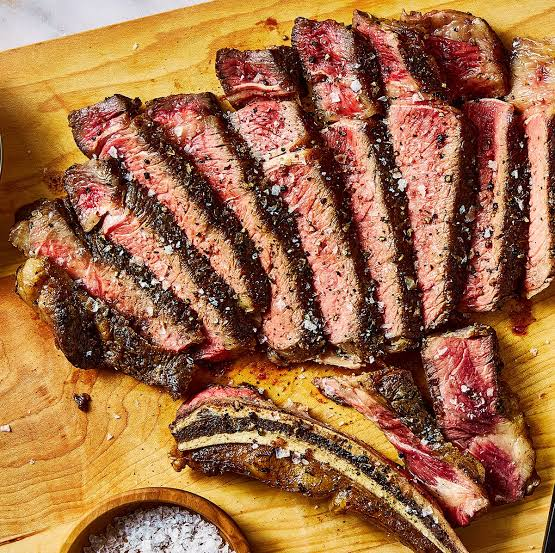

Steak recipe

How to make your first steak!
Ingredients:
- Your chosen cut of steak
- Garlic
- Butter
- Oil (preferably high smoke point)
- Herbs (Rosemary, Thyme)
- Spices (Salt, Pepper)
- This recipe uses a Stainless steel pan
Steps:
- Pat Steak dry (If stored in fridge let it cool to room temp.)
- Season steak and preheat pan on medium to high heat (if water dances around then it's hot enough)
- Drizzle a little bit of oil into pan and then and steak
- Sear long enough for desired rareness then flip (steak will usually unstick itself)
- Once steak dones searing lower heat to medium and add butter, garlic and herbs
- Baste steak until done (Flip if you wish)
Back to homepage:
Back to homepage